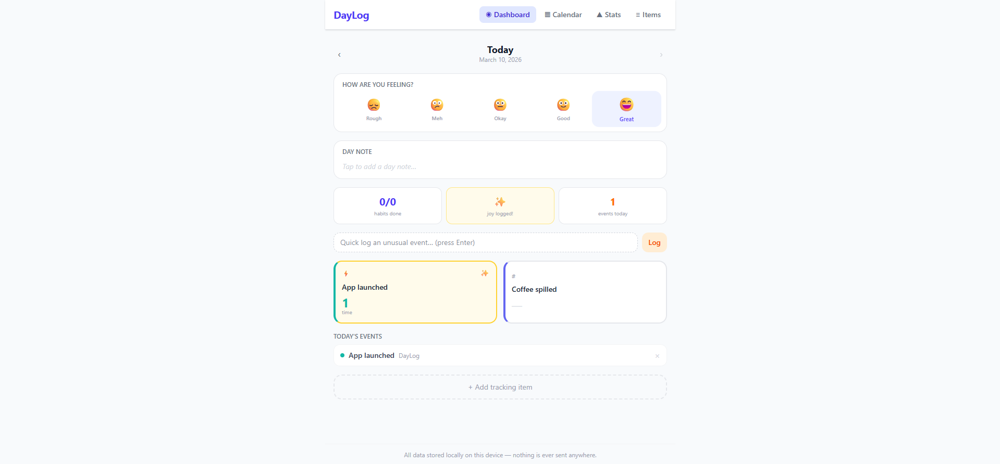

Track habits, metrics, events and moods — privately, locally, with no accounts. Your data lives on your device, nowhere else.

Most tracking apps are built around the assumption that you want to optimize yourself. DayLog is built around a different question: are you having any fun?
It started as a Saturday night conversation. A friend wanted something to track the small absurd things that happen throughout her day — how many times she spilled coffee, whether she went outside, if she did anything she actually enjoyed. Nothing on the market quite fit. So I described it to Claude Code on Monday morning and had a working app an hour later.
Tag any item as "brings joy" and DayLog starts counting. The Joy Index is the percentage of your days that included at least one thing genuinely enjoyable. It sits at the top of the Stats page, along with exactly how many days ago your last good one was.
It sounds simple. It's oddly motivating.
No accounts. No server. No telemetry. Everything lives in your browser's IndexedDB — nothing ever leaves your device unless you export it yourself. Export is full JSON; import it anywhere. If you clear your browser data, your logs go with it — so export regularly if your history matters to you.
She wanted to track how many times she spilled coffee on herself. Also whether she was actually enjoying her days or just going through the motions. I looked at what existed — habit apps, mood journals, life trackers — and none of them had the right combination of casual event counting, proper metrics, and an honest "is this day any good?" measurement.
So I described it instead of searching for it.
The first build took about an hour. It worked, but it felt rough — the layout was functional without being pleasant, and I wasn't willing to send her something I wasn't proud of. I scrapped it and started over with a clearer picture of what each screen should feel like.
She hasn't seen v1. V2 is what she got.
The IndexedDB schema and all the query logic. The routing between Dashboard, Calendar, Stats, and Items. The stats calculations — streaks, week comparisons, most active day. The export/import format. The Joy Index math. Every screen, every interaction — all described in conversation and built in response.
"I think this is a genuinely good free replacement for the paid habit trackers out there — and it keeps your data yours."
If you use it and have ideas, send them through. This one started as a gift for a friend and turned into something I think is actually better than most of what costs money.
No backend, no server, no database in the cloud. The entire app runs in the browser. Data is stored locally using IndexedDB and never leaves your device unless you explicitly export it.
View Source on GitHub →
Got thoughts?
Using DayLog? Found a bug or have an idea for a feature? Drop it here — no account needed, just a name and a message.